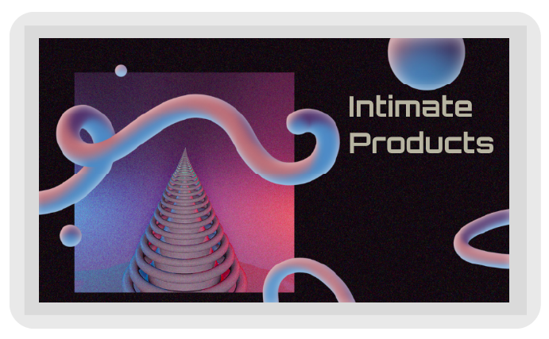
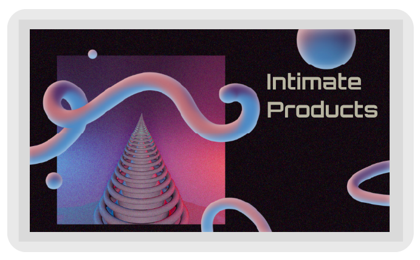

UNDERSØGELSE AF STIL
Det første gruppeprojekt gik ud på at undersøge en udvalgt stil vi havde fået tildelt, og lære om moodboard og styletile. Min gruppe fik stilen Modern Futuristic webdesign. Nogle eksempler på andre stile er f.eks. Flat Design, Brutalist, Minimalisme, Neumorphism og Video Game Style (Retro Design) samt mange flere. Efter grundtig research af vores stil, presenterede vi foran klassen, og derefter begyndte på Studiestartsprøven.
slknsdflksndlfknsdlkfnlskdnflksdnflk
 
